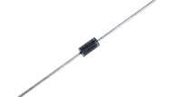
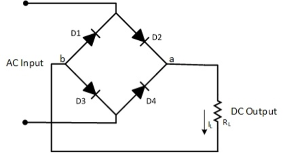
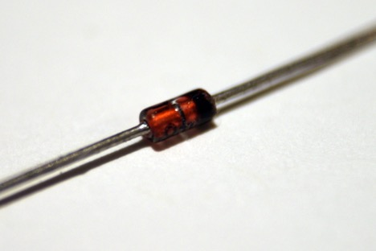
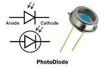

Schottky diode

Schottky diode: like the silicone the Schottky diode has the functions, but it has a very high switching speed mostly used in converting alternating current (AC) to Direct Current (DC)
Full bridge rectifier

Full bridge rectifier: An electronic Component which has 4 diodes which converts alternating current to direct current.
Zener Diode


Zener Diode: this diode allows current to flow in both directions but until reaching the Zener voltage. used in voltage regulators.
Photo Diode:

Photo Diode: a diode which converts light energy to electrical energy. Used in solar panels and infrared remote receivers